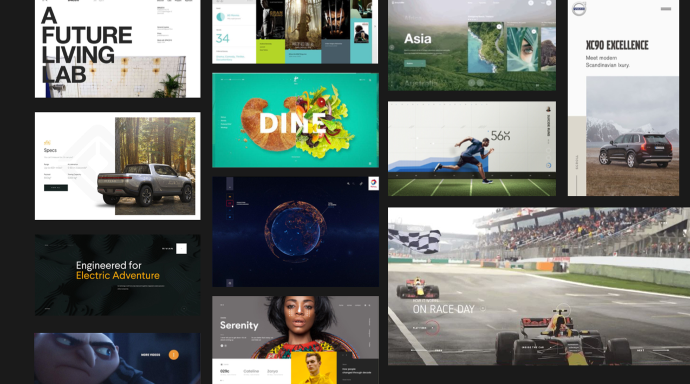
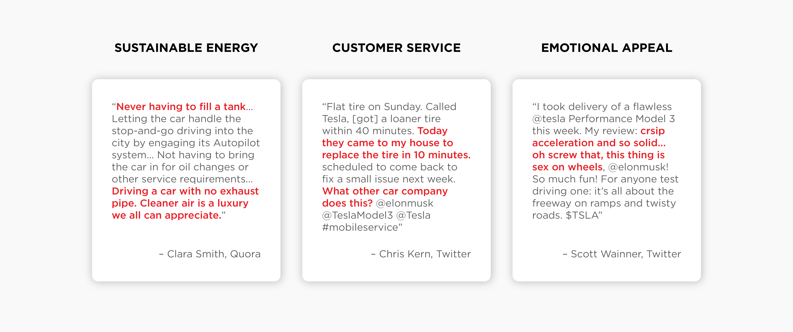
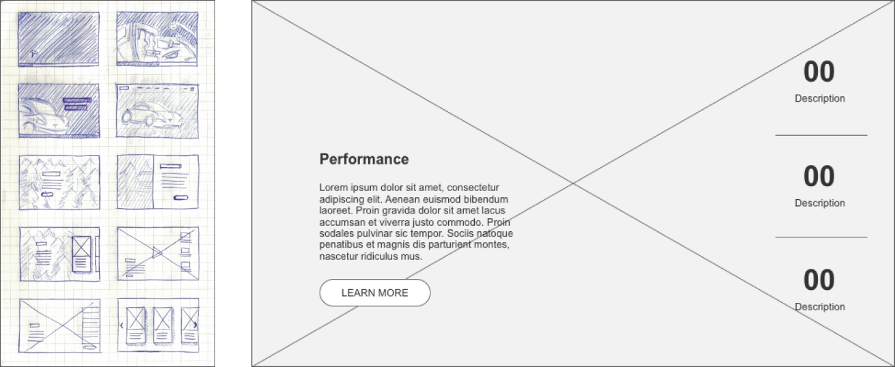
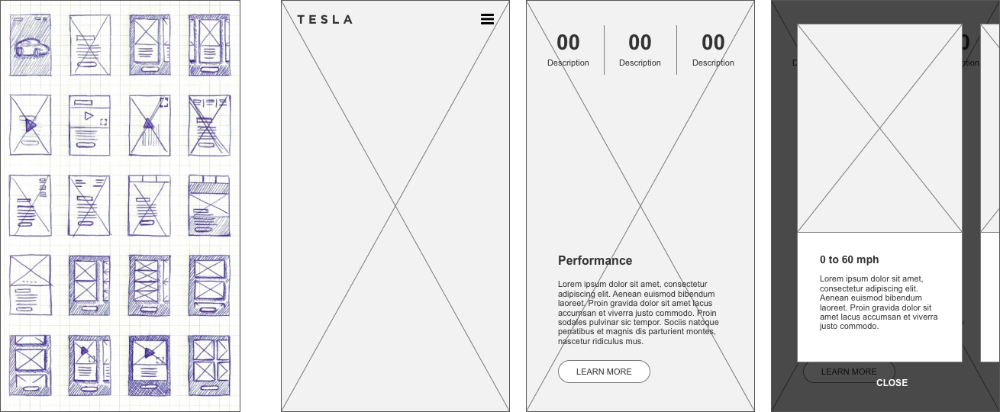
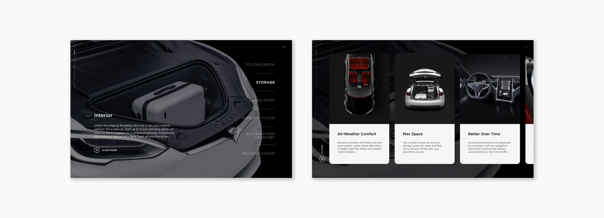

Roadster
The Tesla Roadster (second generation) is an upcoming electric sports car concept unveiled by Tesla in late 2017 as a successor to its original 2008 Roadster.
This project uses the stats found on tesla.com/roadster and incorporates the styles and features from other Tesla model pages into a new visual experience.
Design Prompt
Create a campaign page concept proposal for the Tesla Roadster. Design the Roadster page addressing both desktop and mobile use.
TOOLS
InVision Studio, Illustrator, Photoshop, Premiere Pro
DURATION
1 Week
01 / 04
Research
Current Experience
I started by looking over Tesla's website's information hierachy, and as expected, the most attractive features were advertised up front, but what came next was actually safety, before diving deeper into performance aspects. While I thought one of their biggest selling points was sustainable energy, it was in fact their high regard for safety that held the most importance. This led me to learn more about the company’s mission and what customers are saying about the company.
The Brand
Looking into how other companies structured their sites, I specified my competitor analysis on safety and performance; two factors that Tesla cares deeply about. I included companies from all across the price spectrum, and I found that most of the high-priced brands did little to mention safety features. Mercedes-Benz did not mention safety even once, while Honda, in the low-price range, goes into detail about safety measures. On top of what Tesla is doing with renewable energy, I wanted to bring their care for customers to the forefront of this campaign.
"[Tesla] ultimately [wants to] accelerat[e] the advent of clean transport and clean energy production. Electric cars, batteries, and renewable energy generation and storage already exist independently, but when combined, they become even more powerful." — Tesla.com (About Tesla)
"After safety, our goal is to make a Tesla the most fun you could possibly have in a car" — Elon Musk, Twitter
02 / 04
Process
Insights
I decided to explore how this campaign could evoke emotions because of how people react when they see their favourite car brands, or even a nice car in general. This is especially apparent with luxury sports cars, however, their website experiences sometimes do not exhibit the same quality as their products. So I wondered: How might the Roadster’s features evoke emotions in customers? How might we speak to those emotions by highlighting the Roadster’s features through a digital campaign?
"Why are products described as “gorgeous”, “beautiful”, and “hot”? The most effective tactic of marketing and sales professionals wield is to play on human emotions." — Kevin Suttle, “Beyond Emotion”, UX Magazine
Sketches & Wireframes
 03 / 04
Design
INTERACTIONS


VISUALIZATIONS
The campaign's aim is to speak to customers on an emotional level, rather than diving right into technical facts. It utilizes the simplistic style of Tesla’s current site, and incorporates more product details and features through tidbits of information that are easily and quickly consumable.
I brought in a renewable energy section to emphasize how the Roadster can compete in performance with some of the best car brands in the world, all while running off a reusable energy source.

I abstracted the feeling of “safety” into a feeling of ease, and depicted it through a serene visualization of flying through clouds. This also alludes to Tesla cars' hospital-grade HEPA filters that Tesla's CEO, Elon Musk, mentioned in the wake of the devastating California wildfires, allowing customers to breathe a bit easier.

GALLERY
The interior (and exterior) section is important to showcase the actual product, so it uses more of a gallery look by changing the background image when an category is hovered over, instead of a video visualization. The cards within "Learn More" slide out across the entire screen to allow for quicker consumption of gallery images at once.
04 / 04
Conclusion
Reflection
Since I decided to allot a portion of my time to creating prototypes, if I had more time, an important step I would go back and change would be addressing the accessibility of the site: one, to ensure the text is easily visible at all times, especially while it's on top of whiter parts of the videos, and two, considering how much of a strain all the videos would put on the load time and if large assets should be reconsidered. I also didn't have time to try out different concepts, but I think it would have been beneficial to explore different ways to incorporate product images or info into the visualizations, because, at the end of the day, that is what the customer goal is. And although I think I achieved the style set by the moodboard, there were still opportunities to create a stronger narrative through the experience.